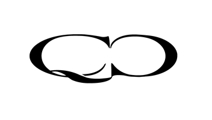

Data & Analytics
NewMark Risk is a fin-tech company focused on providing option-derived analytics for institutional investors. NewMark Risk has garnered experience across the financial and technology sectors where data requires a lot of initial work to scrub and prepare prior to being able to begin analyses to draw meaningful insights. NewMark Risk strives to provide clients with alternative data and options-derived analytics not currently provided anywhere else with unmatched accuracy and quality.
Canari.dev is a web-based platform aiming to bring the power of Machine Learning to all options traders. They use Artificial Intelligence to track patterns in screen trades, cross underlying volatility spreads, term structure shapes, and much more. Canari’s goal is to reinvent the workflow for volatility trades that don’t belong in the order book by making it cheaper and more transparent.
Skylight IPV is an independent price verification company that combines collective experience and knowledge with innovative technology to deliver new, more effective, and efficient solutions. Skylight’s goal is to provide risk managers and product controllers at market-making institutions with extensive, reliable, and independent OTC derivatives valuation data.
Exponential develops bespoke data analytics, signals and global macro forecasts for institutional investors, with a team with over 25 years of experience in institutional investment and high-frequency market-making. Exponential’s Unifier data warehouse and API empowers enterprises to combine on-prem and on-cloud data technology with tightly integrated signals and generative-AI-powered analytics.
Nations Indexes is the world’s leading independent developer of volatility and option-enhanced indexes. Their indexes provide deeper insight into option prices, allowing traders and investors to quantify what has been subjective and trade with knowledge, not opinion, by deconstructing option skew and applying rigorous methodologies.

QuantCrunchQuantCrunch is a derivatives analytics platform for options and derivatives market analysis. SpiderRock’s live options pricing and analytics are now integrated into the QuantCrunch platform, bringing institutional-grade theoretical pricing and volatility analytics to trading, sales, and QIS teams.
CPZAI is an AI-native systematic trading operating system for researching, developing, and deploying quantitative trading strategies. SpiderRock’s live and historical options analytics now feed CPZAI’s research environment, giving firms consistent data across strategy development and analysis.
BMLL is an independent provider of harmonised historical market data across global equities, ETFs, futures, and US equity options. SpiderRock’s US equity options print set is now available through the BMLL Data Lab, letting clients study cross-asset market structure across both datasets.